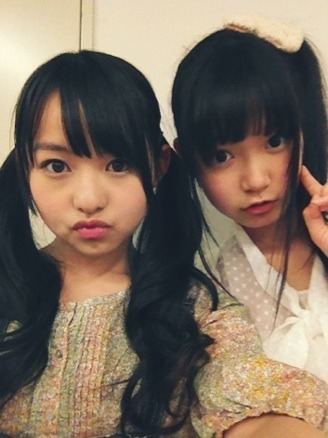

| 2012/05 14 Mon | ひめたん(* ゝω・*)ノ その152 |

はーい通常のブログは今日を最後に10日ほど更新されませーん('・ω・`)
なぜか。不思議ですよね。
なぜならひめたんは普通の高校生。
故に。にゃにゃせ意識。
中間テスト
対策期間に突入するのです!
いややああああああああ。
ゆーてもやらんにゃいけないの(>_<)
高校生なって初めてのテスト。正直不安です。
でもやるしかー

というわけですが、10日間ブログを放置したらひめきゅんさんが寂しい...よね?
うん寂しいと思うから。あれです。あれが復活します。
ひめたん大図鑑
!
1月の終わりの受験期にちらっとやったことあるんだけど
知らないよって方が多いよね。そりゃそうだ(*^^*)
ようは簡単に言うと、過去の質問がえしをまとめて貼っておくから
それを読んでもっとひめたんのこと詳しくなってねってこと!
10日間も読んだらきっとひめたんマスター

さて。今日はお知らせをぶっこみます。
わかりやすいように青い文字で書きますから安心してーね。
いっこめ
広島イベントのこと
!
6月9日に広島で、グリーンアリーナでイベントさせていただけるのが
本当に嬉しくて、いや嬉しすぎてやーばいんだけど
ふと思ったんよね。
選抜入るまで広島帰らん!っていったじゃん...（笑）
あ、ちなみにこの前のアグレッシブの撮影は都内でーした。
ふたつめ
お誕生日ふらげ
!
ひめたんがブログをおやすみする10日間のあいだに
3人がお誕生日するとかどーゆーこっちゃねん!
ゆーわけでちょっとはやいけどおめでと言っちゃう(o>ω<o)
16日・
れーか
(桜井玲香chan)
19日・
らりん
(永島聖羅chan)
25日・
ななせまる
(西野七瀬まる!)
お誕生日おめでとう＼(^O^)／
では!
10日後にまた会おーう♪
にゃおす。
(*´・ω・*)ひめたん
コメント(88)
2012/05/14 21:06